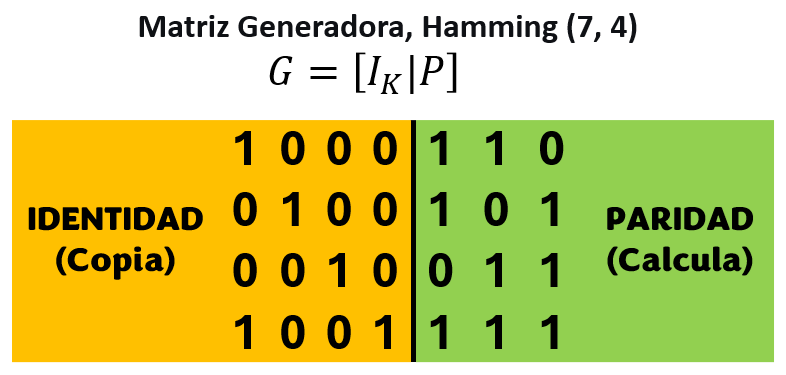
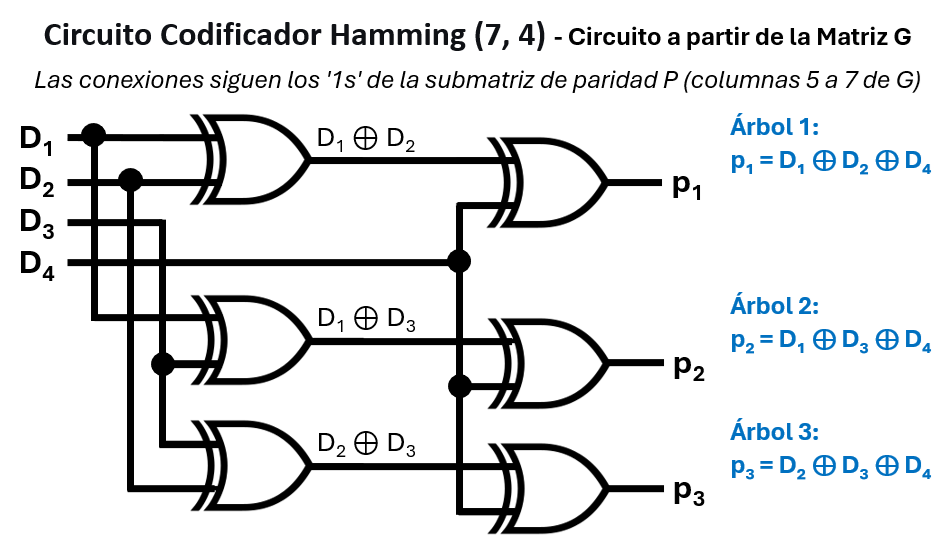

Unidad 4: Teoría de Códigos - Lección 28
En la lección anterior decidimos proteger nuestros datos agregándoles bits extra de redundancia (la "ñapa"). Pero, ¿qué bits sumamos con cuáles para que el escudo sea perfecto y podamos localizar el error después? No podemos conectarlos al azar.
Necesitamos un plano exacto, una receta que le diga a nuestra computadora cómo "amasar" los datos originales para generar los bits de protección. En el mundo del Álgebra Lineal, a este plano maestro se le llama Matriz Generadora ($G$).
Hoy descubriremos un isomorfismo deslumbrante (recordando la Unidad 3): cómo una tabla llena de ceros y unos en un papel se transforma mágicamente en un diagrama de cables y compuertas lógicas físicas. Así como el álgebra de Boole era isomorfa a los circuitos, aquí la multiplicación de matrices es isomorfa al cableado de XORs.
No te dejes intimidar por la palabra "matriz". Piensa en ella simplemente como un tablero de conexiones telefónicas o un mapa de ruteo. Aquí está la matriz $G$ del famoso Código Hamming (7,4):
Las memorias RAM ECC (Error-Correcting Code) usan matrices similares a \(G\) y \(H\) para corregir errores de un bit en tiempo real. Sin ellas, los servidores de Google, Amazon o bancos colapsarían por fallos de memoria inducidos por radiación cósmica.
Observa la línea divisoria vertical en el medio de la matriz. Divide a $G$ en dos partes con misiones completamente distintas:
🧠 Interpretación geométrica: Las 4 filas de \(G\) son 4 palabras válidas (de 7 bits) que forman la base del código. Cualquier combinación lineal (XOR) de ellas genera otra palabra válida. ¡Por eso se llama Matriz Generadora!
⚠️ Nota de seguridad: En comunicaciones encriptadas, a veces se usan códigos no sistemáticos (sin matriz identidad) para ocultar los datos originales. Pero en la mayoría de sistemas prácticos (discos duros, memorias RAM), la simplicidad del código sistemático es preferible.

Fig. 1: Izquierda: Copia los datos puros. Derecha: Crea los bits de protección. La matriz completa $G = [I_k | P]$ multiplicada por los 4 bits de datos genera el paquete final de 7 bits.
Observa las 4 filas de la matriz \(G\). Cada fila es una palabra de 7 bits (válida dentro de nuestro código). Son como los colores primarios (rojo, azul, amarillo) de un pintor: al mezclarlos puedes obtener todos los demás colores del cuadro.
En nuestro mundo digital, "mezclar" dos palabras se hace con la operación XOR (suma módulo 2). Si tomas dos filas de \(G\) y las sumas bit a bit, obtienes otra palabra que también es válida dentro del código. ¡Es como si mezclaras rojo y azul para obtener un morado perfecto!
Fila 1: 1 0 0 0 1 1 0
Fila 2: 0 1 0 0 1 0 1
--------------------- XOR
Mezcla: 1 1 0 0 0 1 1
Esa "mezcla" es otra palabra 100% protegida y válida. ¡Nunca saldrás del "diccionario" del código!
De la misma manera que con 4 colores primarios puedes generar una paleta completa, con estas 4 filas base (que forman una base lineal) puedes generar todas las \(2^4 = 16\) palabras válidas del código Hamming (7,4). Por eso se llama Matriz Generadora: porque genera todo el universo de palabras válidas a partir de sus filas.
La palabra de código (codeword) se ensambla así:
Los primeros 4 bits son los datos originales (gracias a la matriz identidad), los últimos 3 son la redundancia calculada con la submatriz \(P\).
Leer la matriz para armar un circuito es increíblemente fácil si sabes el secreto del isomorfismo (recordando la Lección 21):
Miremos solo la submatriz de paridad $P$ (la parte derecha de la línea) y leámosla bajando por cada columna para descubrir qué sumar:
Tiene '1s' en la fila 1, 2 y 4.
Ecuación: $p_1 = d_1 \oplus d_2 \oplus d_4$
Tiene '1s' en la fila 1, 3 y 4.
Ecuación: $p_2 = d_1 \oplus d_3 \oplus d_4$
Tiene '1s' en la fila 2, 3 y 4.
Ecuación: $p_3 = d_2 \oplus d_3 \oplus d_4$
¿Te resultan familiares estas ecuaciones? ¡Son exactamente las mismas que vimos en la lección anterior! Pero ahora entiendes de dónde salieron: no son aleatorias, son la lectura vertical de la Matriz $G$.
Imagina que el mensaje de datos es un tren de 4 vagones: \([d_1, d_2, d_3, d_4]\). La matriz \(P\) (la parte derecha de \(G\)) es un escáner que tiene 3 columnas (una por cada bit de paridad \(p_1, p_2, p_3\)).
Mira la primera columna de \(P\): \([1, 1, 0, 1]^T\). Cada número le dice: "¿Este vagón del tren debe subirse a la suma?"
Ahora, suma esos vagones usando aritmética de la licuadora (módulo 2): \(d_1 + d_2 + d_4\), pero como es módulo 2, escribimos \(\oplus\) (XOR). ¡Así obtenemos \(p_1 = d_1 \oplus d_2 \oplus d_4\)!
La multiplicación de matrices (en módulo 2) no es más que seguir las instrucciones de los 1s y 0s de la matriz. Es como un baile coordinado: cada columna te dice qué datos debes juntar para crear la paridad. ¡Y así es como un simple papel con números se convierte en un circuito de compuertas XOR!
La matriz de control \(H\) que veremos en la Lección 29 es la "hermana ortogonal" de \(G\). Cumple que \(G \cdot H^T = 0\) (en módulo 2). Esto permite que el receptor verifique si un paquete recibido es válido multiplicándolo por \(H\) y comprobando que el resultado sea cero. ¡El isomorfismo nos permite pasar del diseño (G) a la verificación (H)!

Fig. 2: ¡Mira con atención! Las conexiones a las compuertas XOR en este circuito corresponden exactamente a los '1s' de las 3 últimas columnas de la matriz \(G\), la Submatriz de Paridad \((P)\).
Acabas de compilar una matriz matemática directamente a hardware (El Codificador del Emisor). Este es el poder del isomorfismo: una tabla se vuelve cableado.
En el currículo colombiano, los estudiantes suelen ver matrices por primera vez entre los grados 9° y 10°. Muchos las odian porque parecen "tablas inútiles de números para multiplicar de forma enredada". Como docente, el Código Hamming es tu arma secreta para cambiar esa percepción.
Para enseñar a multiplicar un mensaje de 4 bits (vector) por la matriz $G$ de 7 columnas sin asustar a los estudiantes, no hables de álgebra lineal. Usa esta dinámica visual:
1 0 1 1) como un tren horizontal.El resultado: El tren entra con 4 vagones, pasa por las 7 puertas-escáner, y al otro lado salen 7 bits nuevos. ¡Los estudiantes estarán haciendo álgebra lineal avanzada de tensores sin siquiera darse cuenta!
Tomemos el mensaje \(m = [1, 0, 1, 1]\) y multipliquémoslo por la matriz \(G\) para obtener el paquete protegido \(c = m \cdot G\) (en aritmética módulo 2, donde \(1+1=0\)):
Resultado: \(c = [1,0,1,1,0,1,0]\). ¡Pruébalo en Wolfram Alpha para verificar!
En el mundo real, los procesadores de telecomunicaciones no "ven" compuertas lógicas individuales dibujadas; ellos ejecutan multiplicación de matrices a velocidades asombrosas. Si multiplicas el vector de tu mensaje de datos (1x4) por la matriz $G$ (4x7), obtienes instantáneamente el código protegido final (1x7) que viajará por el aire.
Pero OJO: Al igual que vimos en la Lección 26, el procesador debe usar Aritmética Módulo 2 (donde $1+1=0$) para que la suma matemática se comporte como las compuertas XOR de nuestro circuito.
Hemos pre-configurado este cálculo matricial en el motor de conocimiento Wolfram Alpha para ti. Haz clic en el botón de abajo y mira cómo la matriz transforma el frágil mensaje [1, 0, 1, 1] en el paquete blindado [1, 0, 1, 1, 0, 0, 0] (¡nota que es diferente a nuestro ejemplo porque Wolfram usa otro orden de columnas!):
Ver Magia Matricial en Wolfram Alpha 🐺 ↗
(Una vez en la página de Wolfram, prueba cambiando los ceros y unos del primer vector {1,0,1,1} por cualquier otro mensaje de 4 bits para ver cómo la matriz recalcula los bits de "ñapa" instantáneamente).
Dos docentes analizan cómo romper el miedo de los estudiantes frente a las matrices de álgebra lineal. Discuten cómo la analogía del "Tablero de Conexiones" permite enseñar la Matriz $G$ del Código Hamming como si fuera un simple plano de cableado para compuertas XOR, dándole un sentido físico inmediato a las matemáticas. Además, comparten experiencias sobre el uso de Wolfram Alpha en clase como herramienta de validación rápida.
Los códigos de Hamming no solo protegen satélites y memorias de PC; también son los guardianes silenciosos del funcionamiento fiable de los sistemas de IA actuales. Así es como se conectan estos dos mundos:
La Simbiosis Perfecta:
La IA necesita códigos clásicos como Hamming para funcionar de manera fiable en el mundo físico. Y a su vez, los ingenieros de telecomunicaciones usan la IA para diseñar los códigos de corrección del futuro. ¡Una relación de doble vía que empuja los límites del mundo digital!
Usa esta guía para pedirle a la Inteligencia Artificial que te ayude a diseñar o explicar matrices generadoras de otros códigos de bloque, extendiendo el concepto de "matriz a circuito".
"Comprendí que en un Código de Bloque Sistemático, la Matriz Generadora ($G$) tiene una mitad de Identidad (que copia los datos puros) y una mitad de Paridad, donde cada '1' en las columnas indica qué bits de datos deben sumarse con compuertas XOR. Quiero saber: ¿Cómo se vería la matriz $G$ para un simple 'Código de Repetición (3,1)' donde un solo bit de dato se envía triplicado (ej: entra 1, sale 111)? Construye la matriz y explícame cómo se leería esa matriz si tuviera que soldar los cables, como si fuera a enseñárselo a mis estudiantes de grado 10°. Incluye un error común que cometen los estudiantes al multiplicar estas matrices usando aritmética Módulo 2 en lugar de aritmética normal."
Responde en tu cuaderno físico (o aquí) las siguientes reflexiones y ejercicios prácticos:
El Emisor ya hizo su trabajo. Ha encapsulado los datos y ha forjado una armadura de 3 bits de paridad perfectamente calculados gracias a las ecuaciones dictadas por la Matriz $G$. El paquete es lanzado al ruidoso espacio exterior.
Ahora nos teletransportamos al otro lado de la comunicación, al Receptor. Le acaba de llegar un paquete de 7 bits, pero... ¿cómo sabe si el ruido lo dañó en el camino? ¿Cómo hace la máquina para, mágicamente, saber en qué milisegundo exacto y en qué bit específico ocurrió el error?
En la próxima lección (Lección 29), conoceremos al "Doctor del Sistema": la poderosa Matriz de Control de Paridad ($H$). Aprenderemos a diagnosticar la salud de la información leyendo los síntomas a través de algo llamado "El Síndrome". ¡La magia matemática de la autocuración digital te espera!